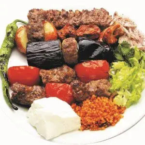
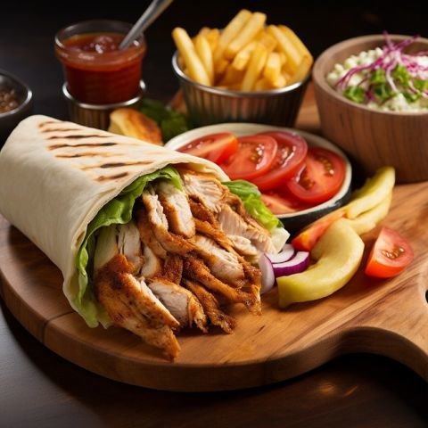

<!DOCTYPE html>
<html lang="tr">
<head><meta charset="UTF-8"><title>GetirTrend – Sarı Siyah</title><link rel="stylesheet" href="engine.css"><link rel="stylesheet" href="assets/brand.css">
<style>
  :root { --Y: #ffd400; --K: #0b0b0b; }
  #stage { background: var(--Y); }
  .scene { padding: 0; }
  #shot { position: absolute; inset: 0; display: flex; flex-direction: column; align-items: center; justify-content: center; text-align: center; overflow: hidden; }
  .stripes { position: absolute; inset: -400px; opacity: .12;
    background: repeating-linear-gradient(-45deg, currentColor 0 60px, transparent 60px 160px); }
  .big { font-family: 'Inter Display', 'Inter', sans-serif; font-weight: 900; font-size: 200px; letter-spacing: -9px; line-height: .88; position: relative; }
  .mid { font-family: 'Inter Display', 'Inter', sans-serif; font-weight: 900; font-size: 130px; letter-spacing: -5px; line-height: .95; position: relative; }
  .emo { font-size: 260px; line-height: 1.1; position: relative; }
  .tagK { display: inline-block; background: var(--K); color: var(--Y); padding: 10px 40px; transform: rotate(-3deg); }
  .tagY { display: inline-block; background: var(--Y); color: var(--K); padding: 10px 40px; transform: rotate(3deg); }
  .nt { background: #fff; color: #111; border-radius: 34px; padding: 26px 30px; display: flex; gap: 24px; align-items: center; width: 860px; margin: 14px 0;
    box-shadow: 0 16px 40px rgba(0,0,0,.35); text-align: left; position: relative; }
  .nt i { font-style: normal; width: 96px; height: 96px; border-radius: 24px; background: var(--Y); display: flex; align-items: center; justify-content: center; font-size: 56px; flex: none; }
  .nt b { display: block; font-size: 42px; } .nt span { font-size: 32px; color: #555; font-weight: 600; }
  .urlK { background: var(--K); color: var(--Y); font-weight: 900; font-size: 60px; padding: 30px 50px; border-radius: 20px; letter-spacing: -1px; position: relative; }
  .btnK { background: var(--K); color: #fff; font-weight: 900; font-size: 66px; padding: 34px 80px; border-radius: 999px; position: relative; }
  .flashK { position: absolute; inset: 0; background: #fff; pointer-events: none; }
</style></head>
<body data-music="pop" data-dots="off">
<div id="stage">
  <div class="scene" id="mx" data-static="1" data-dur="19.47" data-sfx="whoosh:0.000;pop:0.968;pop:1.935;whoosh:2.903;pop:3.871;pop:4.839;pop:5.806;pop:6.290;pop:6.774;pop:7.258;ding:7.742;whoosh:9.677;cash:10.645;pop:11.613;pop:12.581;pop:13.548;success:14.516;ding:8.226;ding:8.710;ding:9.194">
    <div id="shot"></div>
    <div class="flashK" id="fl" style="opacity:0"></div>
  </div>
</div>
<script>window.DEFAULT_DURS = [19.47];</script>
<script src="engine.js"></script>
<script>
  const B = 60 / 124; // one beat in seconds, matches the pop track tempo
  const nt = (b, s, e = '🛵') => `<div class="nt"><i>${e}</i><div><b>${b}</b><span>${s}</span></div></div>`;
  // [beats, bg ('Y'|'K'), html, sfx]
  const SHOTS = [
    [2, 'Y', `<div class="big" style="font-size:180px">RESTORAN</div>`, 'whoosh'],
    [2, 'Y', `<div class="big"><span class="tagK">SAHİBİ</span></div>`, 'pop'],
    [2, 'K', `<div class="big">MİSİN?</div><div class="emo">🤔</div>`, 'pop'],
    [2, 'Y', `<div class="emo">👀</div><div class="mid">O ZAMAN<br>BUNU İZLE</div>`, 'whoosh'],
    [2, 'K', `<div class="mid">DAHA ÇOK</div><div class="big"><span class="tagY">SİPARİŞ</span></div>`, 'pop'],
    [2, 'Y', `<div class="mid">DAHA ÇOK</div><div class="big"><span class="tagK">MÜŞTERİ</span></div><div class="emo" style="font-size:150px">🙋‍♂️🙋‍♀️🙋</div>`, 'pop'],
    [1, 'Y', `<div class="big" style="font-size:150px;margin-top:-90px"><span class="tagK">LAHMACUN</span></div>`, 'pop'],
    [1, 'K', `<div class="big" style="font-size:150px;margin-top:-90px"><span class="tagY">PİDE</span></div>`, 'pop'],
    [1, 'Y', `<div class="big" style="font-size:150px;margin-top:-90px"><span class="tagK">KEBAP</span></div>`, 'pop'],
    [1, 'K', `<div class="big" style="font-size:150px;margin-top:-90px"><span class="tagY">DÜRÜM</span></div>`, 'pop'],
    [4, 'K', `<div class="mid" style="margin-bottom:40px">🔔 🔔 🔔</div><div id="nts">${nt('Yeni sipariş · ₺ 360', '2× Lahmacun, 1× Ayran')}${nt('Yeni sipariş · ₺ 420', '2× Kıymalı Pide')}${nt('Yeni sipariş · ₺ 270', 'Tavuk Döner, Sütlaç')}${nt('Yeni sipariş · ₺ 515', 'Karışık Pizza, Kola')}</div>`, 'ding'],
    [2, 'Y', `<div class="mid">SİPARİŞLER</div><div class="big" style="font-size:165px"><span class="tagK">DOĞRUDAN</span></div>`, 'whoosh'],
    [2, 'K', `<div class="big">KASANA</div><div class="emo">💰</div>`, 'cash'],
    [2, 'Y', `<div style="background:#fff;border-radius:60px;padding:50px 70px;transform:rotate(-3deg);box-shadow:0 30px 80px rgba(0,0,0,.25)"><span class="gt" style="font-size:150px"><span>getir<b>trend</b></span></span></div>`, 'pop'],
    [2, 'K', `<div class="big" style="font-size:190px">ÜCRETSİZ</div>`, 'pop'],
    [2, 'Y', `<div class="big"><span class="tagK">KAYDOL</span></div><div class="emo" style="font-size:180px">👇</div>`, 'pop'],
    [9, 'Y', `<div class="mid">BUGÜN BAŞLA</div><div style="height:70px"></div><div class="urlK" id="u">getirtrend.com/restoran-ol</div><div style="height:60px"></div><div class="btnK" id="bt">Restoranını Ekle →</div><div style="height:70px"></div><div class="mid" style="font-size:80px;letter-spacing:-3px">Hayırlı işler 🤝</div>`, 'success'],
  ];
  // cut times + sound cues (written to the scene so build2.py mixes them)
  let acc = 0; const cues = [];
  SHOTS.forEach(s => { s.start = acc * B; s.end = (acc + s[0]) * B; cues.push(`${s[3]}:${s.start.toFixed(3)}`); acc += s[0]; });
  // notification dings inside the phone shot
  const nShot = SHOTS[10]; [1, 2, 3].forEach(i => cues.push(`ding:${(nShot.start + i * B).toFixed(3)}`));
  // cues are mirrored statically in the scene's data-sfx for build2.py
  let cur = -1;
  HOOKS.mx = (lt) => {
    let i = SHOTS.findIndex(s => lt >= s.start && lt < s.end); if (i < 0) i = SHOTS.length - 1;
    const s = SHOTS[i], sh = document.getElementById('shot');
    if (i !== cur) {
      cur = i; const Y = s[1] === 'Y';
      sh.style.background = Y ? 'var(--Y)' : 'var(--K)'; sh.style.color = Y ? 'var(--K)' : 'var(--Y)';
      sh.innerHTML = `<div class="stripes"></div>` + s[2];
    }
    const k = lt - s.start, beatPh = (lt % B) / B;
    // punch-in on the cut, pulse on every beat, small shake on the downbeat
    const punch = 1 + 0.35 * Math.pow(1 - clamp(k / 0.16), 2);
    const pulse = 1 + 0.035 * Math.pow(1 - beatPh, 4);
    const shake = k < 0.12 ? Math.sin(k * 160) * 14 * (1 - k / 0.12) : 0;
    [...sh.children].forEach((c, j) => {
      if (j === 0) { c.style.transform = `translateX(${(lt * 160) % 160}px)`; return; }
      c.style.transform = `translate(${shake}px, ${(1 - clamp(k / 0.16)) * (j % 2 ? 60 : -60)}px) scale(${punch * pulse})`;
      c.style.opacity = clamp(k / 0.06);
    });
    const nts = document.getElementById('nts');
    if (nts) [...nts.children].forEach((n, j) => { const kk = clamp((k - j * B) / 0.14); n.style.opacity = kk; n.style.transform = `translateX(${(1 - easeOut(kk)) * 300}px) rotate(${(1 - kk) * 6}deg)`; });
    document.getElementById('fl').style.opacity = 0.55 * clamp(1 - k / 0.08);
  };
</script>
</body>
</html>
